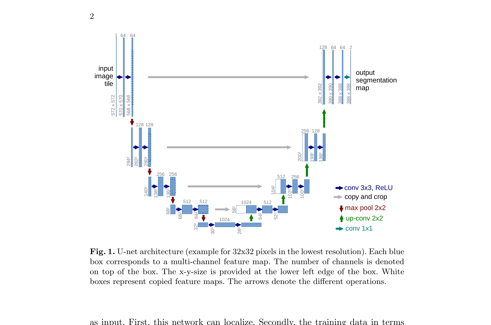
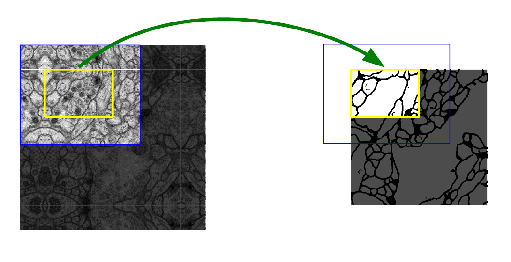
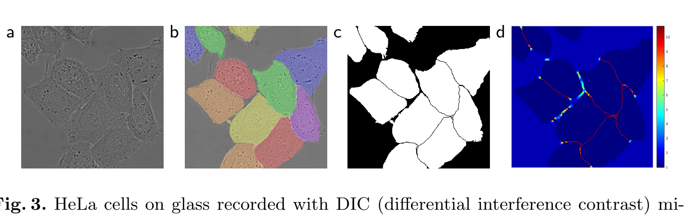
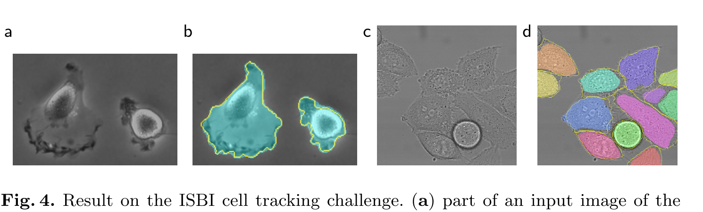

Computer vision · 60-minute study
How can a model see the forest and still trace each leaf?
U-Net solves dense image segmentation by carrying broad context down a contracting path, then returning precise spatial detail through cropped feature-map concatenations.
Classification names an image. Segmentation names every pixel.
If an image contains two touching cells, a single image label cannot say where one cell ends and the other begins.
Convolutional classifiers gradually pool feature maps: that is helpful for recognizing what is present, because a unit can use a wider context. But pixelwise segmentation needs both what and where. A sliding-window classifier can label a patch centered on each pixel, but neighboring patches repeat nearly the same computation. Larger patches add context but pooling makes localization less exact. This is the tension U-Net was designed to resolve.
Go down to understand; come back up to locate.
The left, contracting path applies two unpadded 3×3 convolutions and ReLUs, then a 2×2 max-pool. Each descent halves spatial resolution and doubles channels. The right, expansive path upsamples with a 2×2 “up-convolution,” crops the matching encoder map, concatenates it, then applies two 3×3 convolutions. A final 1×1 convolution turns each 64-component output vector into class logits.
“Symmetric” describes the two paths’ overall form, not equal tensor sizes. The paper uses valid convolutions, so every 3×3 convolution removes a one-pixel border on each side. That is why an encoder map must be centrally cropped before it can be concatenated with a decoder map.

Read it as a contract: which arrows reduce spatial resolution, and what crosses each skip connection?
Watch one tile shrink, then recover a label map.
The paper’s Figure 1 begins with a 572×572 input tile and ends with a 388×388×2 output map. Read the superscript as both spatial dimensions.
| Stage | Spatial size × channels | What changed? |
|---|---|---|
| Input → two valid convolutions | 572²×1 → 568²×64 | Two convolutions remove 4 pixels per dimension; features grow. |
| Pool → next pair | 284²×64 → 280²×128 | Pooling doubles the receptive-field scale; channels double. |
| Deepest representation | 32²×512 → 28²×1024 | Broad context is compactly represented. |
| First decoder join | 28²×1024 → 56²×512 | Crop the 64²×512 encoder map to 56²×512, then concatenate. |
| Final decoder and projection | 392²×64 → 388²×64 → 388²×2 | A 1×1 convolution maps 64 features to two class logits at each output pixel. |
Predict before revealing
Two valid 3×3 convolutions operate on a 572×572 image. Before pooling, what is the new spatial size?
The 184-pixel difference between 572 and 388 means the output tile lacks 92 pixels of border context on each side under symmetric alignment. For an arbitrary large image, U-Net uses an overlap-tile strategy: process overlapping input tiles, keep their valid output regions, and mirror missing input context at outer borders.

Which region becomes output, and which exists only so border predictions see enough context?
Make the rare, decisive boundary expensive to miss.
Touching cells create a different failure: a model can label their large interiors correctly yet merge them. The paper adds a pixel weight map to weighted pixelwise cross-entropy. Let x be a pixel, pk(x) its softmax probability for class k, ℓ(x) its true class, and w(x) its importance. In the conventional loss form, minimizing −w(x) log pℓ(x)(x) makes confident correct pixels cheap and confident wrong pixels costly. (The paper’s printed Eq. 1 omits the leading minus sign.)
Here wc balances class frequency; d1 and d2 are distances to the nearest and second-nearest cell borders. With the paper’s w0=10 and σ≈5, set wc=1. When d1=d2=1, w≈10.23. When both equal 10, w≈1.003. The extra penalty therefore concentrates at the narrow gap where two cells meet.

Why are the gaps between touching cells bright in the weight map?
On these challenges, the combined recipe was compelling.
The paper evaluated EM membrane segmentation and two cell-tracking datasets. The following values reproduce the reported benchmark comparisons rather than projecting a general guarantee.
Table 1, PDF p. 6 · EM segmentation challenge
U-Net also reported Rand error 0.0382, versus 0.0504 for the cited sliding-window CNN, after averaging seven rotated inputs. The challenge table is sorted by warping error: DIVE-SCI’s Rand error (0.0305) is lower, so “best” depends on the selected metric.
Source evidence. Table 1, page 6 of the original paper. It asks: compared with the preceding sliding-window approach, did the full method improve the table’s primary ranking metric?

Table 2, PDF p. 7 · ISBI cell tracking challenge
The reported training sets contain 35 and 20 partially annotated images, respectively. The abstract’s under-one-second 512×512 inference claim and the conclusion’s roughly 10-hour training claim are tied to the authors’ then-current GPU setup, not a modern deployment benchmark.
Source evidence. Table 2, page 7 of the original paper. It asks: how did the reported IoU compare with the listed second-best 2015 results on these two datasets?
Three tempting shortcuts that are wrong.
“Upsampling restores the detail pooling discarded.”
Upsampling alone makes a map larger, not magically more informative. U-Net’s decoder receives high-resolution evidence through the cropped encoder maps that it concatenates at each level.
“A U-Net skip is just a ResNet skip.”
ResNet adds compatible tensors to learn a residual correction. This U-Net crops and concatenates feature maps, increasing the decoder’s channel input so it can learn how to combine context and location.
“Few images means the method needs little supervision.”
The paper still uses annotated training images. Its strategy makes scarce labels work harder through elastic deformation, weighted borders, and a fully convolutional architecture.
“U-Net’s output has the same size as its input.”
Not in this 2015 paper: valid convolutions shrink the valid output region. Overlap tiles and mirrored boundaries make larger-image inference practical.
Answer without looking back.
Why does the contracting path help segmentation?
Pooling and convolution build features with wider context, helping the model decide what a local structure means.
Why crop an encoder map before joining it to the decoder?
Valid convolutions make the matching encoder map spatially larger than the upsampled decoder map. Cropping makes their height and width compatible for channel-wise concatenation.
What does the final 1×1 convolution do?
At every output pixel, it maps the 64-component feature vector to logits for the desired classes.
Why does the border-weight term use distances to two cells?
When a pixel lies in the narrow space between two nearby cell borders, both distances are small, making the exponential term large and emphasizing the separation.
What problem does overlap-tile inference solve?
It lets a valid-convolution network segment arbitrary-size images while retaining sufficient context for each kept output region.
Preserving a path is a recurring design move.
Back-propagation supplies the end-to-end credit assignment: a pixelwise loss sends signal through both U-Net paths. ResNet taught a different shortcut—identity addition for optimization—while U-Net’s concatenation keeps spatial detail available for decoding. YOLO showed that vision can emit structured spatial predictions; U-Net makes the output contract denser, down to one class distribution per pixel. The next LSTM lesson will preserve information across time; U-Net preserves fine evidence across depth. That is an analogy about protected paths, not a claim that the architectures are the same.
U-Net makes a dense decision by refusing to choose between context and location.
Contracting layers learn what a region is; expansive layers recover where the answer belongs; cropped concatenations make both available at the same decision point. The paper’s data strategy then treats scarce labels and thin boundaries as first-class constraints, not afterthoughts.